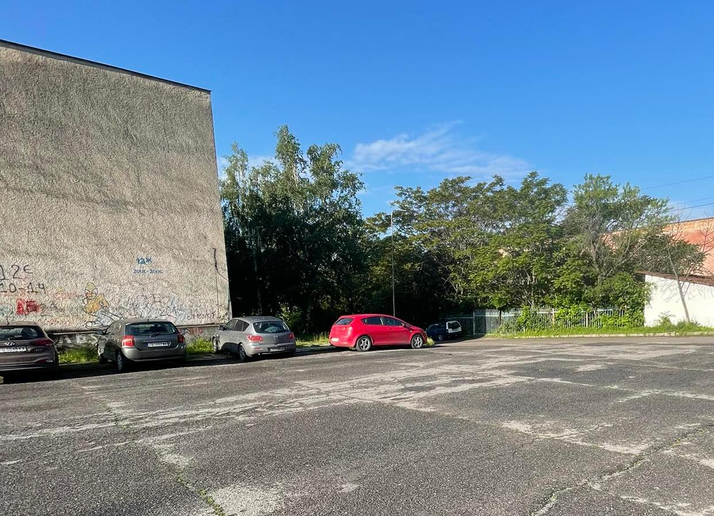

Издирвани Коли
Информация за колите
Това е уебсайт за издирвани коли. Ние се стремим да помогнем в намирането на откраднати или изгубени автомобили. Най-крадените марки коли са:
Тук ще видите два примера на издирвани коли и информацията. която се предоставя за тяхното издирване
Една от тези издирвани коли е Seat, цвят: Червен, с регистрационен номер: РВ 2318РТ,
номер на шаси: ASD213123123
и номер на двигател: 16101dabx.
Информацията за собственика също се изисква, за тови автомобил е:
Адрес на собственика: Карлово, и неговото име: Петър Николов, който паркира кат джигит.
Другият автомобил е Ауди 80, цвят: Зелен, с регистрационен номер: РВ7541НА
номер на шаси:0987654321, номер на двигател: 1234509876, адрес на собственика: Пловдив, ул.Примерна 2
и името на този знаменит собственик е Ахмед, фамилията е неизвестна.